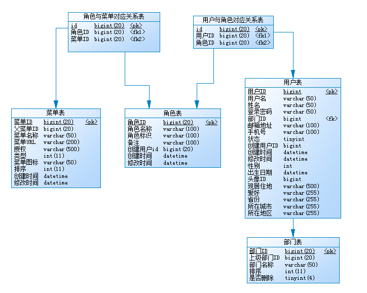

模板说明
模板一：表格呈现方式-增删改查都在同一页面，全部使用弹窗方式实现 （适用于呈现数据较少的页面）
模板二：表格呈现方式-增加，修改在新开的页面（适用于呈现数据较多的页面）
框架主要功能
用户管理：主要完成系统用户配置。
机构管理：管理系统组织机构（部门、小组），树形结构展现。
菜单管理：管理系统菜单、操作权限，最小到按钮级别。
角色管理：角色菜单权限分配，用户到角色的权限管理机制，暂不支持用户直接到权限，设置角色按机构进行数据范围权限划分（需要根据业务进行编写）。
字典管理：对常用的字典数据进行维护，如：是否、男女、类别、级别等。
操作日志：系统正常操作日志记录和查询、系统异常信息日志记录和查询。
代码生成：在线生成基础源代码，针对增删改查类需求可快速开发完成。
在线接口文档：在线查看和调试接口，最大程度减小接口文档的编写。
连接池监视：监视当期系统数据库连接池状态，可进行SQL分析找出系统瓶颈。
技术选型
1、后端
核心框架：Spring Boot2
安全框架：Apache Shiro
模板引擎：Thymeleaf
持久层框架：MyBatis
数据库连接池：Alibaba Druid
缓存框架：Ehcache、Redis
日志管理：SLF4J
实时通信：WebSocket
接口文档：Swagger2
工具类：Apache Commons、Jackson、hutool
2、前端
JS框架：jQuery
UI框架：jQuery EasyUI
消息控件：jQuery-Toast
3、平台
数据库：MySQL
开发环境：Java、Eclipse Java EE 、Maven 、SVN
安全
开发语言：Java 语言开发。
分层设计：数据库层，数据访问层，业务逻辑层，展示层，低耦合，各层必须通过接口才能接入并进行参数校验，保证数据操作的安全。
双重验证：用户表单提交双验证：包括服务器端验证及客户端验证，防止用户跨站脚本攻击(XSS)。
安全编码：用户表单提交所有数据，在服务器端都进行安全编码，防止用户提交非法脚本及SQL注入获取敏感数据等，确保数据安全。
密码加密：登录用户密码进行SHA1散列加密，此加密方法是不可逆的。保证密文泄露后的安全问题。
强制访问：系统对所有管理端链接都进行用户身份权限验证，防止用户直接填写url进行访问。
数据库设计
